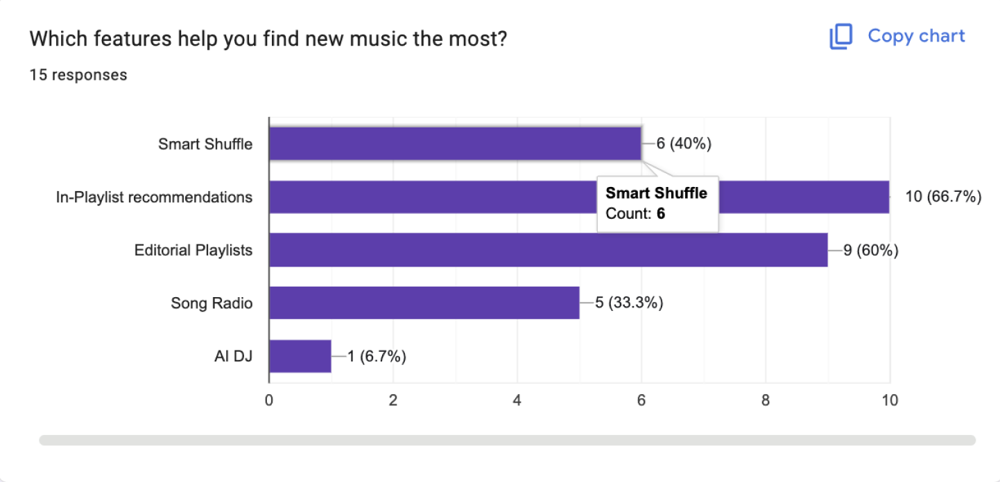
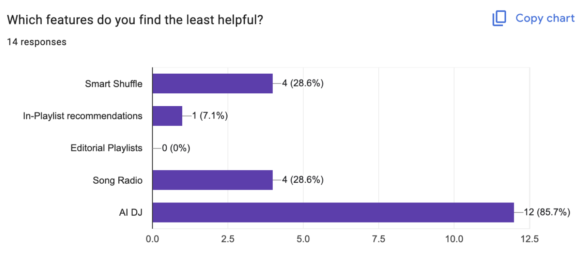
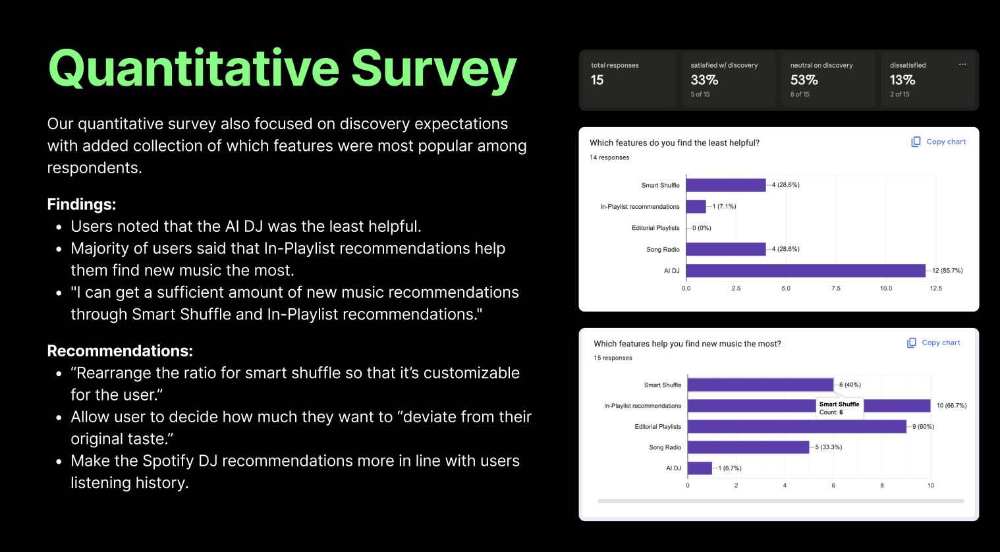
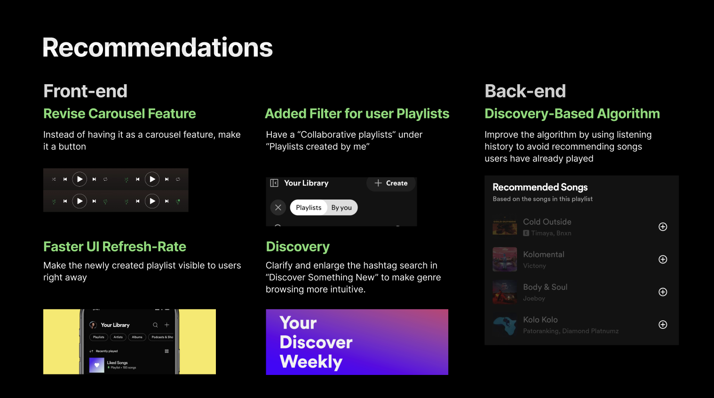
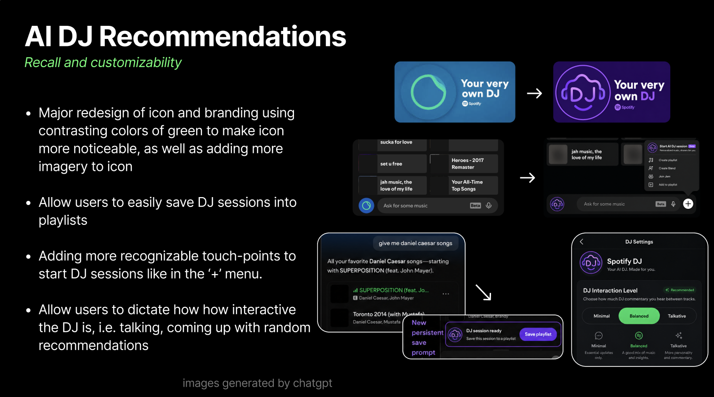
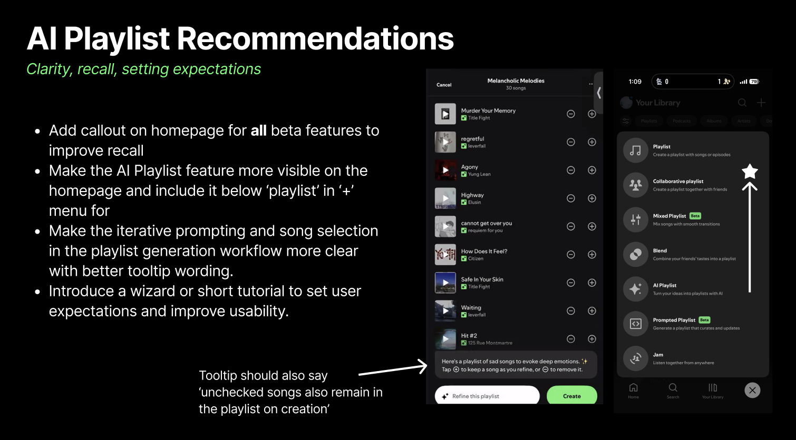

UX RESEARCH
Spotify
Usability Research
Over the course of 12 weeks, I worked with a team of four to evaluate the Spotify user experience through surveys, A/B testing, and usability testing. We analyzed user feedback and behavior to identify areas of friction, uncover patterns, and develop recommendations for improving the overall experience.
UX Researcher · Team of 4
12 Weeks
Surveys · A/B Testing · Usability Testing
Overview
This project focused on understanding how users interact with Spotify and identifying opportunities to improve the overall experience.
Working collaboratively throughout the semester, we used multiple research methods to collect both qualitative and quantitative feedback. The results helped us identify usability issues, understand user preferences, and develop recommendations grounded in our research.
Research Process
Surveys
Collected user feedback to better understand listening habits, preferences, and experiences with Spotify.
Usability Testing
Observed users interacting with Spotify to identify areas of confusion, friction, and difficulty.
A/B Testing
Compared different experiences to better understand user preferences and responses.
Analysis
Synthesized research results to identify recurring patterns and key usability issues.
Recommendations
Translated our findings into recommendations for improving the Spotify experience.
Research Materials
Research materials developed throughout the project, including surveys, testing activities, and supporting documentation. We conducted a Usability test with 4 separate tasks focused on discovery features and general use of the Spotify app. Our goal was to understand what navigation and discovery features were the most popular for users and what challenges they presented. We then consolidated and encoded our notes to produce some key learnings and recommendations


Key Findings
Finding One
In-Playlist Recommendations were the most useful Most participants said In-Playlist Recommendations helped them discover new music the most. However, 3 out of 4 participants had trouble finding the feature, even though they found it useful.
Finding Two
Finding new music was frustrating Participants felt frustrated with discovering new songs and often relied on only a few features. They also had to refresh recommendations to find new music, and some recommendations did not match the vibe they were looking for.
Finding Three
AI DJ was difficult to use and lacked control Participants found AI DJ the least helpful. They had trouble understanding how to save or revisit songs played by the DJ, and the playlist navigation felt unclear. Users also wanted an option to turn off the DJ's talking.
Finding Four
Features were not always easy to find Some Spotify features were difficult to discover or understand. Participants were unfamiliar with the built-in messaging feature, while 2 out of 4 participants were confused by certain wording and navigation.
Recommendations
Based on our research findings, we developed a set of recommendations focused on addressing the usability issues identified throughout the project.
These recommendations brought together the patterns we identified across our surveys, A/B testing, and usability testing to propose potential improvements to the Spotify experience.




Takeaway
The research revealed that the problem was not a lack of music discovery features, but how easily users could find and use them. By improving discoverability, simplifying navigation, and giving users more control over recommendations, Spotify could create a smoother and more personalized discovery experience.
This project strengthened my ability to analyze user behavior, identify patterns, and turn research findings into actionable design recommendations. It also gave me hands-on experience using multiple research methods to better understand how users interact with a product.